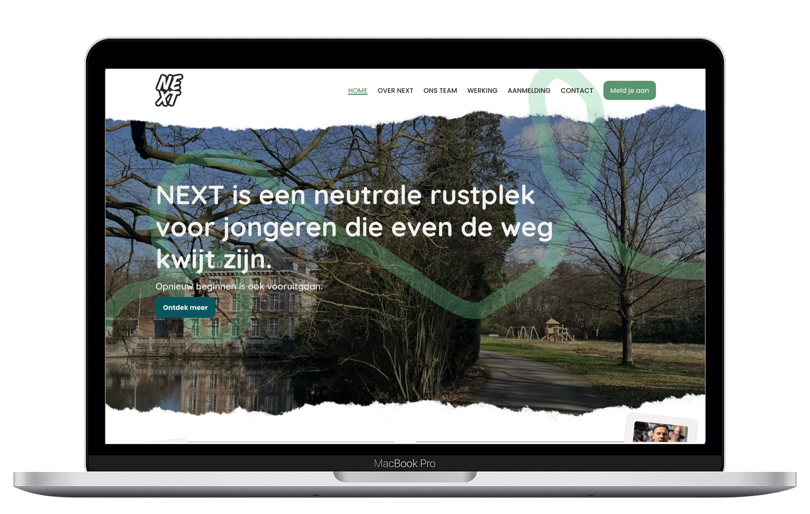

NEXT — Branding and Website Design
For Project NEXT, I worked in a team on a complete branding, logo design and website concept for an organisation that supports young people aged 13 to 19.
In this case study, we translated NEXT’s identity into a clear information architecture, wireframes, a Bludit implementation and an approved logo.

The assignment
NEXT was a starting organisation and needed a clear visual identity and website. The site had to explain what NEXT does, who the organisation is for, how a trajectory works and how young people can be registered.
The challenge was to provide enough information to young people, parents, schools and CLB staff without making the website too formal or text-heavy. That’s why we combined clear sections and call-to-actions with photos, post-its, quotes and wavy lines.
Project NEXT timeline

Research and introduction
We got to know NEXT through a video tour and an extensive information brochure. These sources gave us insight into the environment, target group, values, operations and team.


We then distributed the content across logical pages: operations, about NEXT, team and registration. During our first presentation, we received important feedback: the visual direction felt too calm and needed to express more energy and strength.
Our group also created a moodboard, an initial branding, a navigation structure, a Brief of Concept and a quotation. We presented these elements to NEXT. During this presentation, we received important feedback on the visual direction.


Initial visual direction
Our first direction started from NEXT’s calm, green environment. We worked with light natural colours and a four-leaf clover as a symbol of luck, opportunities and growth.
The client found the basis warm and fitting, but missed energy and strength. That feedback became an important turning point: we kept the natural character, but looked for more contrast and visual impact.


Branding & logo
After the feedback, we tested various colour palettes, typographic directions and logo ideas. Eventually we chose a natural base with a darker green tint, so the branding feels warmer and more powerful.


The logo also went through several iterations. We tested different fonts, colour combinations and letter placements. In addition to typographic variations, we also explored symbolic directions, such as a fist, fire and an arrow that could be integrated into one of the letters. After several meetings and feedback moments, we eventually chose a typographic logo in which the letters of NEXT are built up as a recognisable whole.

Debbie found this slogan particularly powerful, because it summarises the core of NEXT: young people are given the opportunity to start over, without that meaning they are standing still. The logo and slogan were approved by NEXT. The organisation later indicated that they also want to use the logo on their future website and will give us credit for it.
Information architecture
Together with NEXT, we refined the navigation structure. We gave “Our team” its own page and distributed the content across six main sections:
- Home
- About NEXT
- Operations
- Registration
- Our team
- Contact
On each page we placed a clear call-to-action to the registration form. This way, the most important action remains accessible at all times, even when visitors arrive via another page.

Wireframes & iterations
We used wireframes to explore content, layout and information hierarchy before developing the visual design. Feedback from lecturers focused mainly on structure and layout, while NEXT assessed content choices and page layout.
After several iterations, we refined the homepage, the operations page and the registration flow, among others. Only when the structure was sufficiently clear did we proceed with the high-fidelity designs.
Iteration 1

Iteration 5

High-fidelity design
In Figma, we developed four possible colour palettes. NEXT ultimately chose the green direction with a darker green tint, which added the desired strength to the warm base.
We used wavy lines, photos, post-its, polaroids and cards to make the website feel personal and less formal. Visual breaks kept especially the content-rich “Operations” page clear and organised.
Iteration 6

Iteration 9

Implementation in Bludit
After the design phase, we built the website in Bludit. I implemented the “About NEXT” page and contributed to the contact page, thereby translating my Figma design into a working web page.
The live version made it clear that responsive implementation still needed attention: on mobile, text sometimes fell outside the post-its. The many photos also caused slow loading times. That’s why I mainly show qualitative screenshots of the design in my portfolio.
Feedback and final selection
During various presentations, we incorporated feedback from NEXT and the lecturers. We further refined the visual identity, navigation, content distribution and information hierarchy each time.
In total, we made about nine iterations in Figma. NEXT eventually selected our group out of four teams, because we had carefully processed the content, invested a lot of work and visibly adjusted after feedback.